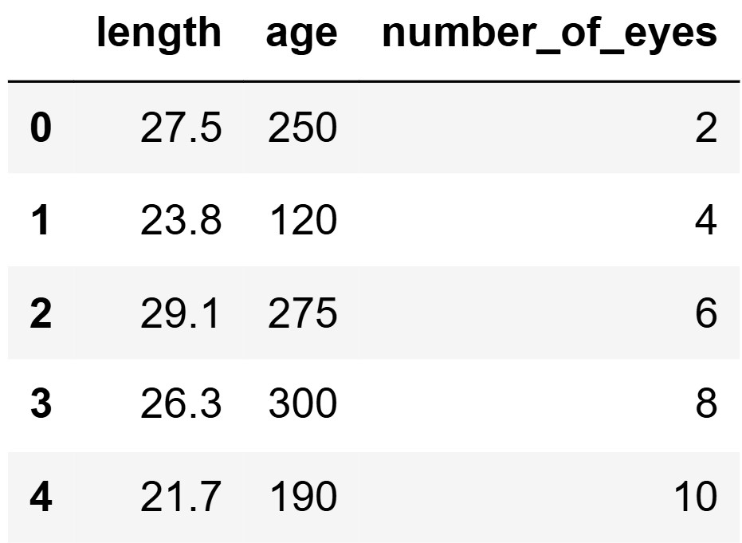
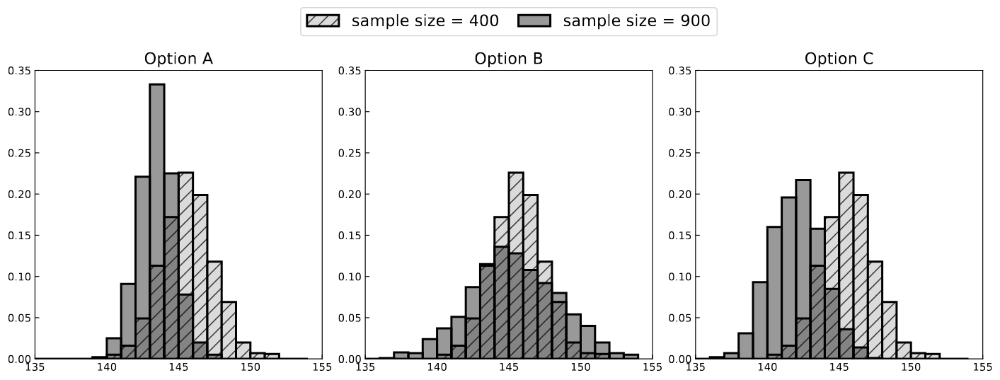

← return to practice.dsc10.com
This quiz was administered in-person. It was closed-book and
closed-note; students were not allowed to use the DSC
10 Reference Sheet. Students had 20 minutes to work on
the quiz.
This quiz covered Lectures 13, 15-18 of the Fall 2024 offering of
DSC 10.
⚠️ PDF version available here .
The DataFrame space_reptiles contains 1000 rows of
information about all space reptiles living on
Statistica, which we’ll think of as a population. For each reptile, we
have its "length" in meters, "age" in years,
and "number_of_eyes". The first five rows of
space_reptiles are shown below.

Fill in the blanks in the sample_of_reptiles function.
The function has two parameters, "sample_size" (int), which
will be a positive integer, and "column" (str), which will
be the name of one of the columns in space_reptiles. The
function should take a sample of reptiles from
space_reptiles, with replacement, of the
specified size, and return the average value in the given column for the
sample.
def sample_of_reptiles(sample_size, column):
return space_reptiles.sample(__(x)__).__(y)__ Answer:
x: sample_size, replace=True
y: get(column).mean()
The average score on this problem was 85%.
True or False: The function call
sample_of_reptiles(1000, "length") is an example of
bootstrapping.
Answer: False
The average score on this problem was 77%.
Calculate the variance of the data in the first five
rows of the "number_of_eyes" column of
space_reptiles: 2, 4, 6, 8, 10. Give your answer as an
integer.
Answer: 8
The average score on this problem was 50%.
Suppose the next row in the "number_of_eyes" column
contains 6. If we add this value to our dataset and then recompute the
variance, it would...
decrease because the new value is less than the greatest value
decrease because the new value is equal to the mean.
remain the same because the new value is equal to the median.
increase because the data set has more values than it did
increase because the new value is a positive number.
Answer: decrease because the new value is equal to the mean.
The average score on this problem was 62%.
Statistica’s forests are filled with tall creatures called whingdingdillies. You have a large random sample of 400 whingdingdillies. In this sample, the mean height is 30m and the standard deviation is 4m. Suppose that whingdingdilly heights are normally distributed.
What are the endpoints of a CLT-based 95% confidence interval for the mean height of whingdingdillies? Each value should be a single number.
Answer: left endpoint = 29.6, right endpoint = 30.4
The average score on this problem was 50%.
Determine the values of the variables v and
w in the code below so that wdd_prop evaluates
to the approximate proportion of whingdingdillies with heights between
30m and 33m. Each value should be a single number.
wdd_prop = stats.norm.cdf(v) - stats.norm.cdf(w)Answer: v = .75, w = 0
The average score on this problem was 52%.
Above, we stated an assumption that whingdingdilly heights are normally distributed. For which part(s) of this question did we need that assumption?
2.1 only
2.2 only
both 2.1 and 2.2
neither 2.1 nor 2.2
Answer: 2.2 only
The average score on this problem was 57%.
After a frightening encounter, you discover that whingdingdillies can run very fast. You collect a sample of 400 whingdingdilly speeds, then use this sample to generate a bootstrapped distribution of resample mean speeds. Afterwards, you wonder how your bootstrapped distribution would have looked if you had instead been able to collect a random sample of size 900. Which of the following overlaid histograms shows two bootstrapped distributions of resample mean speeds, based on samples of size 400 and 900?

Answer: Option A
The average score on this problem was 59%.